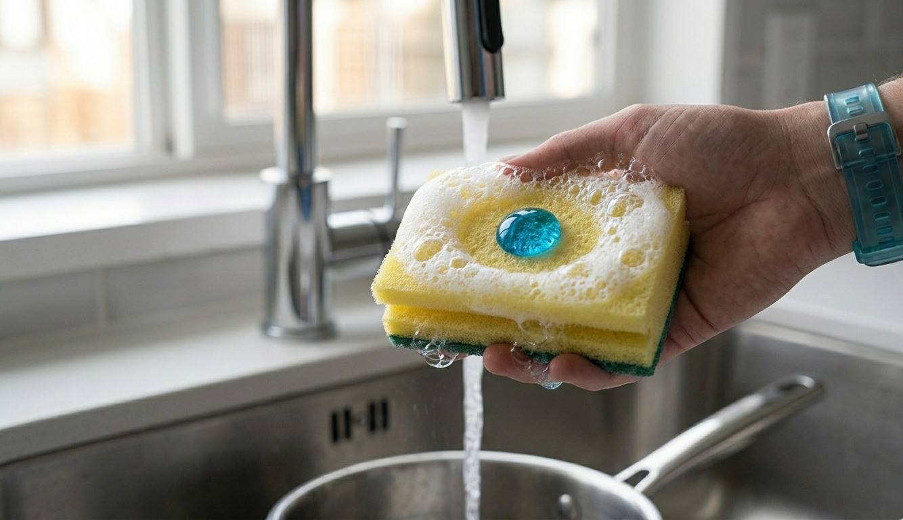

Fórmula ecológica que respeita a natureza e não deixa resíduos nocivos no meio ambiente.
Tecnología desengordurante avançada que elimina a gordura pesada instantaneamente.
Fórmula super concentrada. Você usa muito menos produto para lavar muito mais louça.
Garante a remoção das manchas opacas, deixando um brilho impecável em vidros e inox.